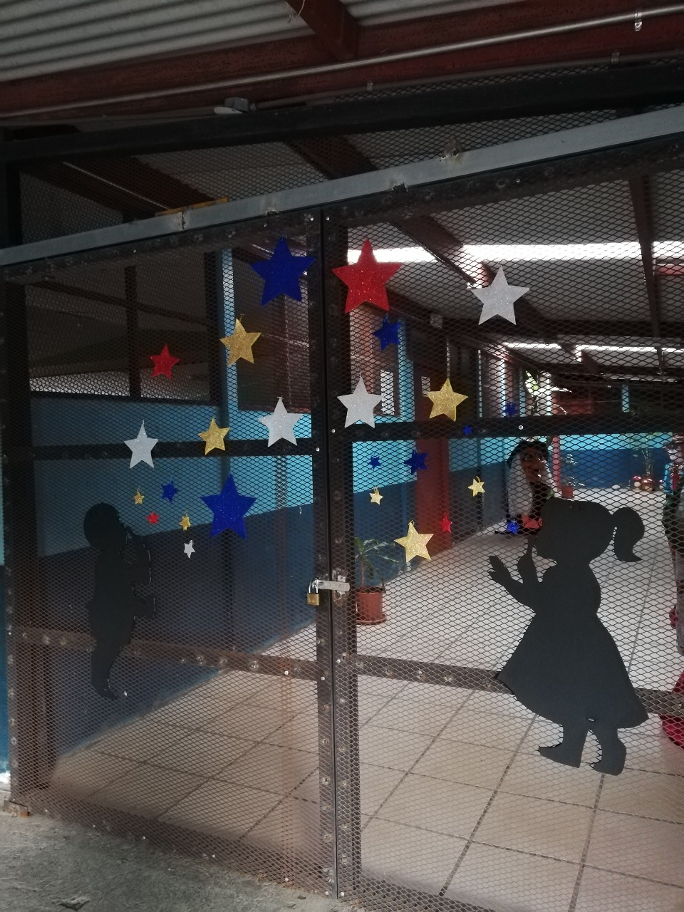
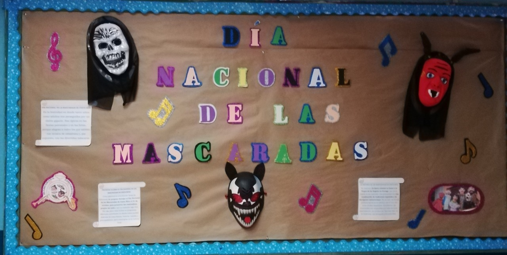

Liceo de Pavas
"Educar para una mejor ciudadanía"

Áreas del Plan Nacional
Materias del tercer ciclo
- Matemáticas
- Español
- Ciencias
- Estudios Sociales
- Artes Plásticas
- Educación Física
- Educación Músical
- Inglés
- Habilidades y destrezas (Técnica 1 y 2)
- Informática Educativa

Materias del ciclo diversificado
- Matemáticas
- Español
- Ciencias
- Estudios Sociales
- Artes Plásticas
- Educación Física
- Educación Músical
- Inglés
- Formación vocacional
- Oficina Moderna
- Informática en Programación
- Informática Educativa
Servicios
- Arte: participación en festivales
- Banda estudiantil
- Giras Educativas y deportivas
- Salón de audiovisuales con pizarra interactiva
- Orientación
- Convenio con el Ministerio de Trabajo
- Club expresión corporal
- Actividades de competencia deportivas Nacional e Internacional
- Emisora de Radio Estudiantil
- Olimpiadas Especiales

Servicios de apoyo a estudiantes
- Bienestar estudiantil. Servicio de Orientación. Programa de Becas
- Proyectos: Programa UPRE, IAFA Pavas
- Conventos MEP-Hospital Psiquiátrico
- Saint Exúpery. Fundación Club Sport La Libertad.
Red de Protección de la niñez y
la adolescencia de Pavas. Clínica de Psicología de la U Latina
Planta Física
- Talleres de Artes Industriales
- Taller de cocina
- Salón de audiovisuales
- Laboratorio de Informática
- Comedor
- Gimnasio
- Zonas Verdes